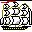

Iuj uzas b
aŭ B anstataŭ bajt aŭ bit. Tio estas evitinda, ĉar
Iuj uzas b
aŭ B anstataŭ bajt aŭ bit. Tio estas evitinda, ĉar 1996-09-06
1996-02-29
Pri reĝimo en kiu programo eligas kiel eble plej multe da detalaj mesaĝoj pri sia laboro; nomo de opcio kiu ŝaltas tian reĝimon (ekz-e «la tria nivelo de babliemo»).
Angle: verbose
France: mode bavard
Germane: ausführlich
1999-03-31
baĉ·a dosier·o — Dosiero entenanta skripton, komanda dosiero.
Angle: batch
file, command file
France: fichier de commande
Germane: Batch-Datei
Ruse: командный файл
1998-06-26
1996-02-29
Mallongigo de bajto, uzata ĉe numeraloj kiel nomo de mezurunuo (por eviti la multenombran finaĵon kaj fari derivitajn mezurunuojn: Kbajt, Mbajt, Gbajt ktp).
Rim. Vd ĉe B kial la unuliteraj b aŭ B estas evitindaj por la koncerna signifo.
Angle: byte
Germane: Byte
Pole: bajt
Ruse: байт
1996-09-06
Opo el fiksita nombro da bitoj (kutime bitoko), traktata kiel tutaĵo. Kutime la malpleja adresebla memorero (ĉelo) havas la kapaciton 1 bajt; kiel mezurunuoj de memorkapacito ankaŭ estas uzataj kilobajto, megabajto, gigabajto.
Per la 8 bitoj de la normala bajto eblas kodi 256 diversajn valorojn, plej ofte por unu el la sekvaj celoj:
Rim. Unu 8-bita bajto estas prezentebla per du ciferoj en deksesuma nombrosistemo. En malnovaj komputiloj estis uzataj ankaŭ 6-bitaj bajtoj, oportunaj por prezenti signon de 64-elementa signaro aŭ du okumajn ciferojn. Iam oni misnomis bajto 16- aŭ 32-bitajn ĉelojn. — Nune la bajtlongo egala al 8 bit estas firme establita, interalie en internaciaj normoj (ekz-e ISO-9660, ISO-11544).
Angle:
byte, octet
France: octet
Germane: Byte
Pole: bajt
Ruse: байт
1996-02-29
Redaktado de duuma datumprezento, je la nivelo de bajtoj aŭ bitoj. Iuj redaktiloj disponigas por tio specialan reĝimon (ekz-e hexl-mode en Emakso).
Angle: hexadecimal editing
mode
Ruse: двоичное редактирование
2000-09-11
Datumstrukturo uzata por serĉo, tia radikhava arbo ke
Angle: B-tree
1996-02-29
 Laŭ [EKV],
Laŭ [EKV],
Angle: bounded
Ruse: ограниченный
1996-02-29
Primitive
rekursia speco de la mu-operatoro. Ekz-e
por naturnombra funkcio f oni povas difini
(µy)y<z f(y, …)
(minimumigo de f laŭ la argumento y barita per z).

Kp senbara serĉo.
Angle:
bounded search
Ruse: ограниченный поиск
1996-02-29
Elemento a de
orda aro F nomiĝas supra
baro (resp. suba baro) de subaro P⊆F, se x≤a
(x≥a) por ajna x∈P.
Kp limo.
Angle: bound
France: majorant (minorant)
Germane: Schranke
Hispane: cota
Ruse: граница
1996-02-29
Programlingvo kies unua vario aperis ĉ. 1965 kun la celo disponigi facile lerneblajn rimedojn de la «scienca komputado» en dialogo al inĝenieroj kiuj volas meme fari siajn programojn.
Multajn siajn trajtojn BASIC heredis de FORTRAN (ĝenerala aranĝo de la programo, apartaj frazoj) — tamen en formo pli konciza kaj kun la esprimilaro iom pliriĉigita: ekz-e, estas enkondukita kompleta aro de operacioj super matricoj kaj signoĉenoj, kio konsiderinde faciligas la programadon.
Grandan parton de sia sukceso BASIC ŝuldas al sia interaga medio: la interpretiloj de BASIC disponigis al la uzanto dialogajn redaktadon, ĝustigon kaj ruladon de programoj jam en la epoko, kiam tio estis relative malofta reĝimo. La simpleco de BASIC faris ĝin klasika programlingvo por mikrokomputiloj. Estas influhava tradicio de grafikado en BASIC.
Ekzistas naciaj variantoj de BASIC, ekz-e la francaj basique kaj basicois. Kiel esperantigitan nomon oni povus uzi la fonetikan transskribon Bejsiko.
Flago kun operacio, ŝaltanta ĝian valoron al la malo de la kuranta; tiu operacio. Ekz-e la klavo Disŝovu (Nomoj de reĝimklavoj), kiu en multaj redaktiloj regas la disŝovreĝimon (ĉu la enigata signo enŝoviĝu antaŭ la signo indikata de la kursoro, aŭ anstataŭu ĝin). Kp inversigi.
Angle: toggle
Germane: Betriebsschalter, Kippschalter
Ruse:
переключатель
1996-02-29
Ω Esperantigita nomo de bash (laŭ la angla Bourne Again SHell), kiu estas la GNU-a ŝelo por Unikso. Baŝo konformas al Pozikso, entenas la tutan tradician Uniksan «ŝelon de Bourne» kaj krome, kelkajn esprimilojn de C-ŝelo kaj Emakso-stilan redaktadon en la komanda linio.
Respondaro: ftp://ftp.cwru.edu/pub/bash/FAQ; forumoj: news:gnu.bash, news:gnu.bash.bug.
Angle: bash
1998-06-26
Mezurunuo de rapido de datumtransmeto (de modulado), nombro de signaleroj (statŝanĝoj de la kanalo) dum 1 sekundo. Por seria kanalo 1 baŭd = 1 bit/s; por aliaj transmetmanieroj 1 signalero povas superi 1 biton.
Rim. baŭd estas mallongigo de baŭdo (ĉefe por eviti la finaĵojn en formuloj).
Noto. De franco E. Baudot (1845–1903).
Angle: baud
Hispane: baudio
Ruse: бод
1996-02-29
Adreso, rilate al kiu estas indikataj aliaj adresoj ĉe relativa adresado. La nombro, egala al la baza adreso, adiciiĝas al la deŝovo dum kalkulado de fakta adreso.
Angle:
base address
Ruse: базовый адрес
1996-02-29
En genera gramatiko, tia parto (subĉeno) de derivregulo, ke ĝi konsistas nur el bazaj signoj, sen sintaksaj variabloj. Vd sintakso.
Angle: terminal string
Ruse: терминальная цепочка
1996-02-29
 Fikcia horizontala
rekto sur kiu staras la signobildoj de tiparo (kaj sub kiun malleviĝas la subliniaĵoj).
Fikcia horizontala
rekto sur kiu staras la signobildoj de tiparo (kaj sub kiun malleviĝas la subliniaĵoj).
Angle: baseline
France: ligne de pied
Ruse: опорная линия
шрифта
1999-02-20
Elemento de la alfabeto de formala lingvo (vd genera gramatiko; kp nocio, sintaksa variablo). En Paskalo oni distingas:
baza_signo = speciala_simbolo | litero | cifero.
Angle: terminal
Ruse: терминал,
базовый символ
1996-02-29
Tia speco de relativa adresado, ke la bazo estas en reĝistro (nomata bazreĝistro; depende je la komputilo, ĝia numero estas aŭ implicata aŭ malimplice indikenda en la komando), kaj la deŝovo estas indikita en la komando mem. Tia adresado oportunas por realigo de eksterlokaj (facile relokeblaj) programoj.
Angle: based addressing
Ruse: базированная
адресация
1998-11-02
127 = 2u1111111 = 4u1333 = 8u177 = 10u127 = 16u7F
«Lineare
sendependa generantaro de vektora spaco» [EKV].
Angle: base; radix
France: base
Germane: Basis
Ruse: основание; начало;
базис
1998-09-11
Reĝistro entenanta la bazon por bazhava adresado. Kp indicreĝistro.
Angle: base
register
Ruse: базовый регистр
1998-11-02
Esperantigita formo de BASIC. Cetere ĝi estus taŭga nomo por Esperanto-adaptaĵo, realigita de Motihiro Jamasaki kun traduko de la vortosimboloj.
Lit. Jamasaki M. Esperanto-Basic // Internacia Komputado. 1984. N-ro 4.
Angle: BASIC
Ruse:
Бейсик
1996-02-29
La kapacito de kanalo.
Angle: bandwidth
France: bande passante
Ruse: ширина полосы
(частот)
1996-02-29
bend·o [PIV1] —
Noto. Pro nacilingvaj influoj multaj preferas bendon en «magneta bendo» ktp (kvankam la lingvo disponigas la Fundamentan rubandon); en kelkaj okazoj tio estas konfuziva (kp «frekvencbendo», por kiu cetere ankaŭ uzeblas la Fundamenta zono).
En la epoko de Zamenhof la franca estis la lingvo internacia, kaj li elektis la vorton «rubando» el la franca. La vortaro [Larousse89] entenas ruban perforé kaj ruban magnetique (sed ankaŭ la koncernajn bande-ojn). Evidente, la «rubando» estis pure franca, kvankam la angla influo ĝin marĝenigis.
Nun la lokon de la franca okupas la angla, kaj nun la vorto «bendo» probable estus konvena elekto. Sed ni jam havas «rubando»n, Zamenhofan kaj oficialan, kaj pleje mi malŝatas inventi senconuancojn kiuj ilin distingu. Strio, rubando, zono … bendo — tio estas iom tro multe.
Angle: tape; band
Ruse:
лента
1996-02-29
Testado de konstruata programaro fare de eksteraj uzantoj antaŭ oficiala eldono.
Kp alfa testado.
Noto. La kutimo signi tiun stadion per beto venis el IBM (pli ĝuste, tie ĝi estis la stadio C).
Angle: beta testing
Ruse: опытная эксплуатация
1999-02-20
Angle: well-formed
formula, wff
Ruse: ппф
1996-02-29
Speciale aranĝita dosiero, entenanta programajn partojn (subprogramojn: procedurojn, makroojn, konstantojn ktp) atingeblajn per ilia nomo dum bindado (vd bindilo) kun iu programo. Ekz-e dinamike bindebla biblioteko.
Angle: library
France: bibliothèque
Germane: Bibliothek
Ruse: библиотека
1997-06-12
= Ĵeto.
Angle: map, mapping
Ruse: отображение
(2) bild·ig·o —
Tekstotrakta procedo de printado,
surekranigo aŭ alimaniera vidigado de signoj
per signobildoj.
Angle: rendering,
rendition, imaging
Ruse: отображение,
визуализация
1996-02-29
Vd ĉe ĵeto.
Angle: image
France: image
Germane: Bild
Ruse: образ
1996-02-29
Kolekto da enkomputiligitaj lumbildoj, eventuale kun teksta kaj sona akompano, kiujn koncerna programo (ekz-e flash player) povas surekranigi unu post alia, ekz-e dum prelego aŭ ĉe rakonto pri vojaĝo.
Angle: slide show
2003-02-21
binar·a [PIV1] — Duuma (nombrosistemo, arbo); duloka (operacio); dustata (baskulo); duoniga serĉo.
1996-02-29
Konstrui plenumeblan programon (plenumeblan dosieron) el celmoduloj, ŝtopante la intermodulajn ligilojn; interalie, enŝovi la programojn realigantajn la bibliotekajn funkciojn. Vd statika bindado, dinamike bindebla biblioteko; kp munti.
Angle: link, bind
Ruse: компоновать, связать
1996-07-07
Programo konstruanta ŝargomodulon el celmoduloj.
Angle: linker, linkage
editor, binder
France: éditeur de liens
Germane: Binder
Ruse: компоновщик
1996-02-29
Ĉiu el la du internaj krommarĝenoj de paĝoparo, t.e. tiu ĉe la maldekstro de dekstra
paĝo, aŭ tiu ĉe la dekstro de maldekstra paĝo. Bindmarĝeno oportunigas
la bindadon.
Angle: gutter (margin)
France: gouttière, marge de reliure
Ruse: поле
переплёта; средник
1996-02-29
Ŝargilo, konstruanta taskon el celmoduloj rekte en la ĉefmemoro dum la ŝargo.
Angle: linking loader
France: chargeur de liens
Germane: Bindelader
Ruse: компонующий
загрузчик
1996-02-29
Mallongigo de bito, uzata ĉe numeraloj kiel nomo de mezurunuo por eviti la multenombran finaĵon kaj fari derivitajn mezurunuojn; ekz-e 22 bit/s.
Rim. Vd ĉe B kial la unuliteraj b aŭ B estas evitindaj por la koncerna signifo.
Angle:
bit
Ruse: бит
1996-09-06
Ĉar bito estas speco de cifero, tial bit- estas uzebla prefiksece por esprimi la ideon ke la aĵo indikita per la radikalo estas cifereca; ekz-e bitlibro, bitmonero.
Angle: e-, electronic
Ĉeno kies eroj estas bitoj, Bulea vektoro. Vd laŭbita operacio, karakteriza vektoro.
Angle:
bit string
Ruse: битовая цепочка, битовая
строка
1996-02-29
Libro en formo de cifereca dosiero (speco de hiperteksto), legebla per komputilo (precipe,
per poŝkomputilo) uzante taŭgan
programon (ekz-e ĉi tiu Leksikono en formo de dosiero kl.tr por la
legilo TomeRaider).
Angle: e-book, electronic book
2003-04-23
¤ Rimedo por pagi per transsendo de nombro el unu komputilo en alian. La nombro estas unika numero de la pagilo, simila al la numero presita sur papera monbileto. Tiajn numerojn generas banko, kaj ĉiu el ili reprezentas iun monsumon.
Karakteriza trajto de la bitmoneroj estas ke, simile al la kontanta mono, ili estas anonimaj kaj reuzeblaj: kiam aĉetanto sendas bitmoneron al vendisto, oni ne povas informiĝi pri la aĉetanto. Tio estas diferenco disde la kreditkarta pago.
Angle: digital cash
2000-03-19
Rastruma ekranbloko tiel interaganta kun la procesoro, ke al ĉiu rastrumero respondas po unu aŭ pluraj bitoj en la komputila memoro; ŝanĝante la enhavon de memorĉeloj la programo ŝanĝas la bildon sur la ekrano.
Angle: bit-map display
France: afficheur à mémoire écran
Ruse:
дисплей с поточечной адресацией
1996-02-29
 Universitateca komputila reto, liganta ĉefe IBM-komputilegojn.
Universitateca komputila reto, liganta ĉefe IBM-komputilegojn.
Rim. Retpoŝta adreso BITNETa nomo@loko ricevas en Internet la finaĵon .bitnet.
M. Weichert
1996-02-29
Pozicio de duuma cifero en duuma kodo. Por memoro, la nombro de bitoj indikas maksimuman kvanton de duumaj ciferoj, kiun ĝi povas enteni (vd memorkapacito); por datumo, la nombro de bitoj indikas la kiomon de duumaj ciferpozicioj, en kiuj ĝi estas registrita. Vd bajto.
Angle: bit, Binary digIT
Ruse:
бит
(2) bit·o —
« Ligna aŭ metala ŝtipo, fiksita sur bazo de ŝipa ferdeko kaj uzata por fiksi ŝnurojn aŭ ĉenojn» [PIV1].
Angle: bitt
Ruse: битенг
(3) bit·o —
Angle: shannon, bit (Basic Information uniT)
1996-02-29
Okbita bajto.
Angle: byte, octet
Ruse:
байт
1999-03-18
Linio, kiu estas vakua linio aŭ kies solaj signoj estas blankaĵoj kajaŭ kaŝita teksto (precipe ĉe faksimila redaktado). Iuj programoj traktas blankajn liniojn same kiel la vakuajn liniojn (kaj reduktas la unuajn al la duaj); aliaj povas ilin distingi.
Angle: blank line
Ruse: пустая строка,
чистая строка
1996-02-29
Signoĉeno el unu aŭ pluraj blankaĵoj: spacetoj, taboj, liniavancoj ktp (en programlingvoj ofte ankaŭ komentoj).
Angle: white space
1999-07-19
Signo kiun la programoj rigardas iasence sinonima al spaceto. Ekz-e en Pozikso tiun signokategorion (LC_CTYPE) havas spaceto kaj tabo.
Noto. Evidente, tiu termino implicas ke la fono de teksto estas blanka (kiel la ordinara papero); oni povus pli logike paroli pri «fonsigno», sed tio probable estus malpli kutima kaj rekonebla.
Angle: blank character
1999-07-19
Ĵargona nomo por enujigita(j) kristalo(j), unu aŭ pluraj icoj kun malgrandaj konektiloj.
Angle: chip
France: pastille, puce
1996-02-29
La tutmonda kolekto da blogoj, konsiderata kiel siaspeca universo.
Angle: blogosphere
2005-08-06
Ofte aktualigata TTT-ejo prezentanta afiŝojn en komuna paĝaro. La afiŝojn karakterizas komuna temo, aŭ
komuna(j) aŭtoro(j).
Simile al vikioj, blogoj povas ebligi iteragadon de aŭtora kolektivo kaj reagojn de la legantoj; tamen en vikio la interesaĵo estas verkon, dum en blogo ĝi ofte konsistas en la procezo (kiel en la forumoj — sed la blogoj estas malpli malfermitaj kaj pli personaj). Iuj blogoj estas speco de taglibro (persona blogo), aliaj similas gazeton aŭ (komentitan) referencaron.
Angle: blog, weblog
2005-08-06
 «Aro da organoj,
formanta tutaĵon, kaj tia, ke oni povas facile ĝin anstataŭigi per alia
simila, en okazo de difekto de la aparato aŭ maŝino» [PIV1].
«Aro da organoj,
formanta tutaĵon, kaj tia, ke oni povas facile ĝin anstataŭigi per alia
simila, en okazo de difekto de la aparato aŭ maŝino» [PIV1].
Angle: unit, module, device
Ruse: блок,
устройство, узел
(2) blok·o (en programlingvo:) —
Aro de deklaroj kaj ordonoj entenataj inter la blokaj krampoj, kutime la simboloj BEGIN kaj END, aŭ STARTO kaj FINO, aŭ { kaj }. Ekz-e en C:
En Paskalo bloko aperas en funkcideklaro, procedurdeklaro kaj kiel parto de la tuta programo:
bloko = ["MARKO" marko{"," marko}";"]
["KONST" konstantodeklaro{";" konstantodeklaro}";"]
["TIPO" tipdeklaro{";" tipdeklaro} ";"]
["VAR" variablodeklaro{";" variablodeklaro} ";"]
{ (procedurdeklaro | funkcideklaro)";" }
parenteza_ordono. Angle: block
Ruse:
блок
(3) blok·o (ĉe datumregistrado:) —
Grupo da logike senrilataj rikordoj, registritaj en unu fizikan rikordon, precipe por pligrandigi la rendimenton de datumtransmeto aŭ por plidensigi la registraĵojn. Tia bloko povas aperi kiel operando de eneligaj operacioj super la ekstera memoro.
Angle: block
Ruse: блок; зона
Tre simpla metodo por ordigi elementojn de vektoro; ĉiu vica elemento «leviĝas» al la «supraj» pozicioj kvazaŭ bobelo en gasakvo, ĝis ĝin haltigas pli granda elemento, kiu transprenas la stafeton; tiel, post la unua paso tra la vektoro la maksimumo lokiĝos ĝuste ĉe la lasta pozicio; dum la sekva paso determiniĝos la maksimumo de la resto, ktp. Tiu algoritmo estas tre klara, sed ankaŭ tre malrapida: ĝi postulas O(n²) paŝojn; kp Rapida ordigo. (Paskala programo: La bobelmetoda ordigo.)
Angle: bubble sort
Ruse:
пузырьковая сортировка
1996-02-29
En dialogujo, butono per kiu la uzulo povas indiki, ke li komprenis la mesaĝon, ke li definitive konfirmas siajn respondojn kaj lanĉas la agon.
Noto. Kiel en la komuna lingvo, fakte povas temi pri malagrabla situacio, ekz-e:
— Ĉu mi povas paroli al NN?
— Bedaŭrinde, li trafis en akcidenton kaj nun estas hejme.
— Bone, mi serĉos lin tie.
Angle: OK
Ruse: Да, ОК
1996-08-24
En la propozicia kalkulo kaj predikatkalkulo,
formulo sen krudaj «gramatikaj» eraroj (kun ekvilibraj krampoj, kun
operacisignoj havantaj la ĝustan nombron da argumentoj ktp). Ekz-e
(a≤b) ⇔ (a>b) estas bff (kvankam ĝi malveras), dum
(a≤b+]<b) ne estas bff.
Por komputikisto tiu nocio sinonimas kun «sintakse bona»; nu, la matematikistoj ambicias esprimi la enhavon per la formo, konkludi pri la semantiko (ĉi-okaze, pri la vereco) surbaze de la sintakso. En la propozicia kalkulo tio decideblas; por la predikatkalkulo oni pruvis, ke la koncerna problemo estas nedecidebla.
Angle: well-formed formula, wff
Ruse:
правильно построенная формула, ппф
1996-02-29
Bona kondiĉkvalito, t.e. tiu eco de matrico
(aŭ de ekvacio), ke negranda eraro en kalkulo aŭ perturbo en la matricanoj
relative malmulte efikas la kompudadon. Matrico estas des pli bonkondiĉa, ju
pli proksimas al 1 ĝia kondiĉnombro.
Angle: well-conditioned
Ruse: хорошо
обусловленная
1998-08-14
Orda aro estas bonorda se ĉiu ĝia ne-vakua subaro havas malplejan elementon.
Angle: well-ordered
France: bien ordonné
Germane: wohlgeordnet
Ruse: вполне
упорядоченный
1996-10-06
Ajnspeca (luta, ŝraŭba, klema ktp) elektrokonektejo de elektra aŭ elektronika aranĝaĵo.
Noto. Tiu difino laŭas PeKoTeKon; laŭ PIV1,
born·o = klemo.
Angle: terminal
France: borne
Germane: Stromanschluß
Ruse: вывод
1996-02-29
«Disirejo», ordono, kiu elektas por plenumo iun el siaj subordaj frazoj.
En Paskalo estas du specoj de branĉaj ordonoj: seo kaj okazelekta ordono.
Angle:
branching, conditional statement
Ruse: оператор
ветвления
1996-02-29
Stirklavo destinita por halt(et)igi programrulon.
Angle: break key
France: clé de rupture
Ruse: клавиша
прерывания
1996-02-29
«Raoul, franco, prof. ĉe la Konservatorio de Artoj kaj Metioj; matematikisto. Nask. 23 marto 1870. Eksprez. de la Pariza Esperanto-grupo … Kunlaboris al Scienca Revuo k.a. Verkis: Matematika Terminaro kaj Krestomatio, 1905. Trad. de Huntington: “La Kontinuo” (1907; la unua grava verko pri matematiko en Esperanto, X+125 p). LK, 1909» [Enciklopedio de Esperanto].
1996-02-29
Parazita signalo estiĝanta en elektronika aŭ komunika sistemo kaj malhelpanta ĝian funkciadon. Bruo egale distribuita super la frekvencospektro estas nomata blanka bruo.
Angle: noise
France: bruit
Ruse: шум
1996-02-29
Maniero solvi problemon plie per la «bruta forto» de la aparataro ol per la intelekto de la programisto; ekz-e, kiam por trovi la malplejan elementon de granda listo oni unue kreske ordigas la liston per (jam preta) ordiga programo kaj poste prenas la unuan listanon; aŭ kiam, malkontenta pri tro granda eraro de nombrometoda proceduro, oni provas naive apliki pli grandan precizon de la variabloj anstataŭ ŝanĝi la algoritmon. Vd senbara serĉo.
Angle: brute force
Ruse: метод
грубой силы
1996-02-29
Memorareo por provizora konservado de datumoj. La uzado de bufro ebligas diversmaniere plirapidigi la laboron; ekz-e «pogranda» legado de tutaj datumblokoj kutime estas pli rapida ol la «podetala» legado de apartaj datumanoj; alternante plurajn bufrojn, dum la plenigo de unu bufro oni povas uzi (kaj malokupi) alian, plenigitan pli frue; ktp. Vd memorhierarkio.
En Paskalo ĉiu dosiero aŭtomate ricevas bufron, kiun oni rigardas speco de variablo. Ĝi havas la sintakson de referencato, en kiu anstataŭ bazo aperas la dosiera variablo:
bufro = variablo "↑".
Angle: buffer
France: tampon
Germane: Puffer
Ruse: буфер
1996-02-29
Rim. Eble pli taŭgus la nomo «logika tipo», ĉar, ekz-e en Paskalo estas ankoraŭ alia datumtipo, aro, kiu same rajtas je la epiteto Bulea.
Noto. Nomita omaĝe al G. Buleo.
Angle: Boolean
Ruse:
Булев, булевский
1996-02-29
Nevakua aro super kiu estas difinitaj tri operacioj: ¬x (unuloka), x+y kaj x⋅y (dulokaj), tiaj ke
Krom la bazaj operacioj de Bulea algebro oni difinadas multajn aliajn, inter kiuj la plej grava estas la simetria diferenco, ankaŭ nomata disaŭo; la Buleaj valoroj { 0, 1 } kun la disaŭo (rolanta kiel adicio) kaj kajo (en la rolo de multipliko) formas korpon.
En komputoscienco la elementoj de Bulea algebro kutime estas interpretataj kiel logikaj propozicioj (en programado; vd kondiĉo) aŭ komutaĵoj (en aparataro; vd ŝaltalgebro). Laŭ la unua interpreto ¬x estas rigardata nego kaj skribata ¬x, NE x, NOT x; x⋅y kaj x+y estas rigardataj kajo kaj aŭo (simbole x∧y, x∨y, x&y, x|y; x KAJ y, x AŬ y; x AND y, x OR y); x≤y estas implikacio. La arteoria interpreto de la Buleaj operacioj eblas por la aroj de Paskalo.
Angle: Boolean algebra
France: algèbre booléenne
Ruse: булева
алгебра, алгебра логики
1996-02-29
En programlingvoj, esprimo liveranta Bulean valoron. La ĉefa apliko de Buleaj esprimoj estas en la kondiĉo de seoj, iteracioj ktp.
Angle: Boolean expression
Ruse: логическое выражение
1996-02-29
Funkcio kies argumento(j) kaj rezulto(j) apartenas al unu sama duelementa aro de Buleaj valoroj; en la teorio de aŭtomatoj tiujn valorojn oni kutimas signi per 0 kaj 1, en la logiko, per vero kaj malvero. Bulea funkcio difineblas aŭ per formulo reduktanta ĝin al la bazaj Buleaj operacioj, aŭ per sia grafikaĵo, kiu lasta povas havi la formon de vertabelo (ekz-e Vertabelo por ekzempla funkcio) aŭ de hiperkubo. Evidente, unu sama grafikaĵo estas esprimebla per multaj diversaj formuloj.
Grava apliko de Buleaj funkcioj estas projektado de komputilaj cirkvitoj el bazaj logikaj elementoj (ekz-e el la elementoj realigantaj la Buleajn operaciojn ∧, ∨, ¬, malkajo). Al pli simpla formulo respondas pli simpla cirkvito; la konstruadon de la plej simpla formulo oni nomas minimumigo de Bulea funkcio.
Angle:
Boolean function
Ruse: Булева функция
1996-02-29
Operacio de Bulea algebro; ĉiu el la bazaj Buleaj funkcioj. Diversaj programlingvoj disponigas malsamajn arojn da Buleaj operacisimboloj kun malegalaj prioritatoj. En la komputiloj kaj en iuj programlingvoj (ekz-e en C, Ada) Buleaj operacioj aplikeblas ankaŭ al bitĉenoj — vd laŭbita operacio.
Angle:
Boolean operator
Pole: operator Bulowski
Ruse: Булева
операция
1996-02-29
En la logika interpreto de Bulea algebro, la kuna nomo por vero kaj malvero.
La programlingvoj kutime difinas malvero=0; vero=1 (aŭ pli ĝenerale, ĉion krom 0 oni rigardas vero). Tamen en la laboradministraj lingvoj pli oportunas la mala interpreto: 0 indikas sukcesan finon de laboro, kaj estas rigardata vero; ĉio alia indikas fiaskon, kaj estas rigardata kiel malvero. La avantaĝo de tiu interpreto estas, ke en okazo de malsukceso la entjera liveraĵo de la laboro povas enteni erarnumeron.
Angle:
Boolean value
Ruse: Булево значение
1998-03-09
Angla sciencisto George Boole [bu:l] (1815–1864), kiu okupis sin pri matematika analizo de la logiko kaj tradukis iujn homlingvajn esprimilojn en matematikan simbolaron de logikaj ekvacioj. Oni rigardas lin fondinto de matematika logiko. Vd Bulea algebro.
Angle: Boole
Ruse: Буль
1999-03-18
Dika punkto (nigra rondo) vertikale centrigita sur la teksta linio, signo uzata interalie por apartigi la erojn de listo, ŝaltitajn opciojn en la menuoj (precipe la regatajn per radiobutono) ktp. Ĝiaj Askiaj surogatoj povas esti steleto aŭ o.
HTML disponigas plurajn formojn de listeraj markoj, inter ili bulo estas indikata kiel «disko» (angle disc):
Angle: bullet
France: puce
Ruse: жирная точка,
маркёр пункта
1996-10-18
bulten*ej·o —
Afiŝejo, ekz-e la «Esperantlingva Bultenejo Saluton!». Tel. +31-53-326886. FidoNet 2:283/323.
Wim KOOLHOVEN ‹wim@saluton.iaf.nl›Rim. La kritikon de tiu formo vd sub afiŝejo.
Angle: bulletin board system, BBS
France: BAB, Babillard électronique
1996-02-29
Grupo de senciklaj elektrokonektaj lineoj, ebliganta samtempan transmeton de datumoj kaj signaloj inter diversaj organoj de komputilo laŭ komunaj specifoj logikaj kaj fizikaj; ekz-e adresbuso, datumbuso.
Angle: bus
Ruse:
шина
1996-02-29
Angle: button
Pole: przycisk
Ruse: кнопка
1996-08-26